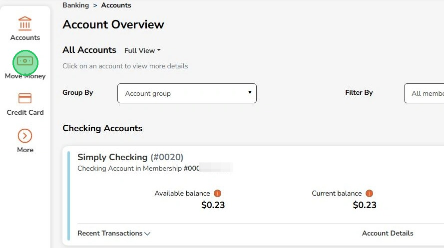
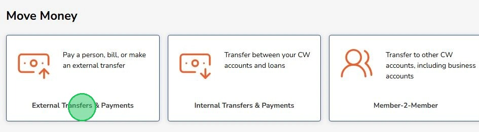
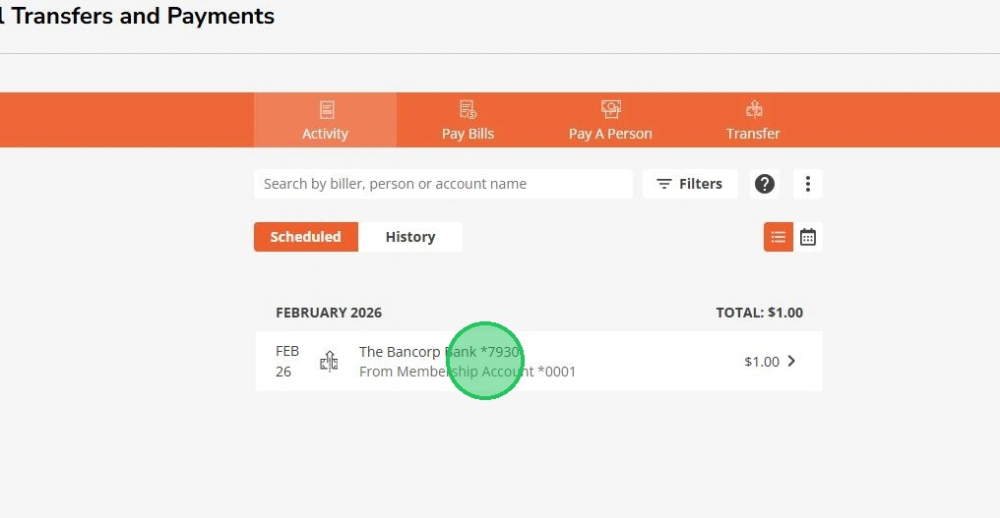
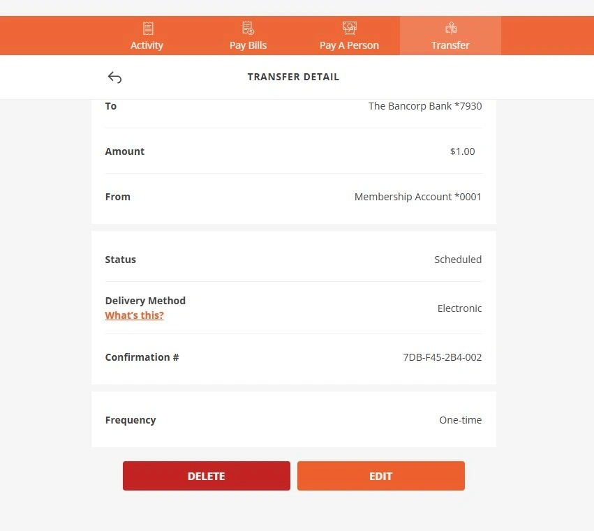
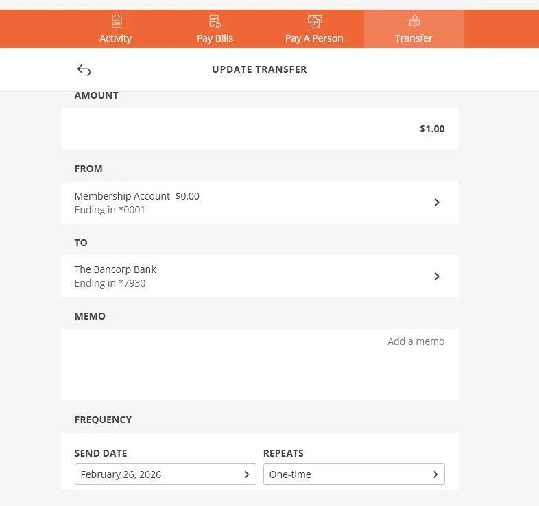

Edit Scheduled External Transfers
This guide will help you edit or delete scheduled transfers to accounts at other banks (external accounts) from your online banking.
1
Click "Move Money"

2
Click "External Transfers & Payments"

3
Select the scheduled transfer to Delete or Edit

4
Select the option to "Delete" or "Edit" at the bottom

5
Selecting "Edit" will let you update the transfer. Click "Save Changes" at the bottom when done.
